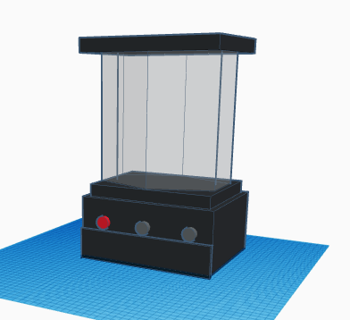
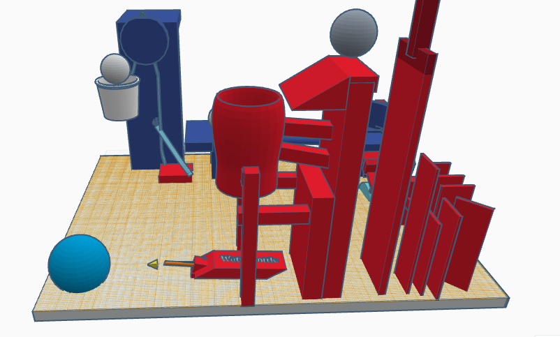
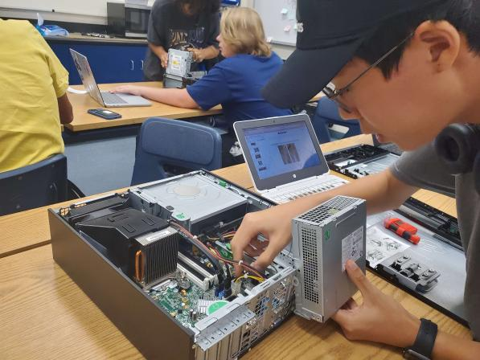
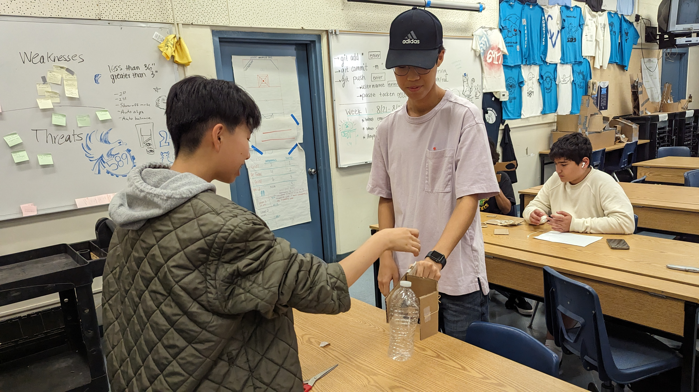

![]()
8/25/23 - This is my first journal entry! For the first whole week of school, I learned about lab safety, ettiquete, and the engineering process. For engineering class, I can't eat, I need to make sure to wear proper PPE, and I need to make sure I'm not using tools dangerously; I need to use them the way they were supposed to be used. For ettiquete, I need to make sure I'm cooperating and I don't endanger anyone while I'm working, and I need to make sure I don't interfere with other people's work. During Thursday's challenge day, I had to get a marble into a bucket using halved PVC pipes, and by cooperating with people. I learned that in order to be successful, everyone needs to be successful, and if even a single person doesn't cooperate, it can be detrimental to the other group members. When Mr. Poole showed slides to describe the engineering process, I learned that I need to make lots of prototypes and make sure to improve upon them in order to get to a final goal. In addition to this, I learned that a project should be fixing a problem, either by creating a brand new solution or improving an already existent solution. Now personally, I enjoyed the slides, since they gave me a review on how to be safe, and how to be courteous in the lab. The challenge on Thursday though, it made my brain hurt. Not everyone cooperated, or applied the simple concept of trajectory to the challenge, which led to people making... frankly an eyesore of a track for the marble. We needed to be just a bit more cooperative in order to finish the challenge. The only thing holding us back was the slight lack of understanding momentum. All in all, it was a great week in engineering, and I can't wait for week 2!
My Favorite Website
9/1/23 - This is my second journal entry. This week, we took a quiz on the engineering process and lab safety. Wasn't the worst, but I'd say I need to look at the process one more time. Would probably benefit me if I looked at it every day just to make sure I remember 100%. For Thursday's challenge, the class made a home appliance using Tinkercad. I ended up making a blender, which ended up looking extremely wide. I feel like if I had some extra time, I could improve upon it since I'm more familiar with Tinkercad now. I look forward to next week's challenge! I have a good feeling next week's challenge will be even more fun. Maybe it'll be another group activity. Hopefully things go smoother than the first challenge week activity!
9/8/23 - Third journal entry! This week was somewhat stressful. AP Precalculus and AP Physics were somehow mindbogglingly difficult, so I stayed up until around 2AM on Thursday night, but the other days were fine. Monday was Labor Day so no school, while on Tuesday, we had a drug awareness assembly and Wednesday we had MAP testing. Pretty boring. For engineering though, I refined my skills in Tinkercad, and learned to use just a touchpad(albeit quite painful, it still works). We used Tinkercad to make the Rube Goldberg machine's basic blueprint. It turned out well! The most challenging part of the entire project has to be the pulley. Making it out of cardboard should be fine, but orienting it so that the weight of our first platform doesn't tip over but moves just as we apply pressure is going to be hard. Luckily, my group and I won't back down and I'm sure we'll find out how to make the project work.
 9/22/23 - This is my fourth entry, and this week, we couldn't update the website. Once we did CAD modeling for our project, we had to refine the little bits and pray that the physics engine works. Once we got around that, we thought we were all set, and we hoped it would be smooth sailing. Boy were we wrong. Cardboard is surprisingly stubborn. Once the cardboard was cut, the group and I realized our project didn't have enough power, so we ended up just having a video of us popping the balloon up close. I wonder how the project will be graded since we still had a CAD and a somewhat working model(Just flawed at the end portion). 9/22/23 - This is my fifth entry. This week, we had to create a floating surface using a piece of paper, and I decided to go with a cone. I ended up learning that I needed more surface area to make it float, so pretty good lesson there. Then for another challenge, the class made different-sized E cutouts. First we had a drawing with measurements, and cut another person's E out. I didn't learn too much, other than the fact that I sometimes can't do basic addition. All in all, good week. I was productive and I Was able to stay happy for the most of it. 9/28/23 - This is my sixth entry. This week, we had to dissect computers, and it was way too easy for me, since I've tried taking apart laptops in the past. It was nice being able to see computer parts so far apart though. I did learn that some computers have heat sinks that are like car radiators, just connected to a fan via a small tunnel. I do want to figure out how to surpass Moore's law and the physical limitations of our current technology in the future. This weekend, I'll most likely stay home and try to get rid of my cold, or go golfing if I get better fast.  10/6/23 - This is my seventh entry. This week, groups changed a tiny bit and I got to work with some new people. Of course, there were different ideas from between the two of us, but in the end, we compromised and ended up making a functional prosthetic hand. That ties in to the week's lesson on bioengineering. I learned that bioengineering also included statistics, since we can gather data from biological samples and that would be considered engineering. All in all, very simple week, not too busy. The pace of this week was a lot nicer than other weeks since things were spaced out nicely. Not only that, Mr. Poole brought his cat which made class a lot more interesting. Cat pics? Don't have any for the website for now... ㅠㅠ 